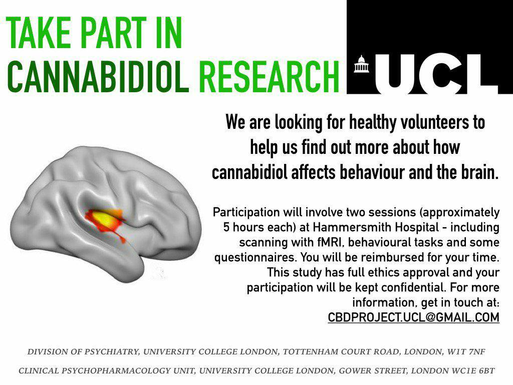

Current research:
The cannabis plant produces over 100 cannabinoids, which act upon the endogenous cannabinoid system. Delta-9-tetrahydrocannabinol (THC, the main psychoactive constituent of cannabis) produces the effects that cannabis users seek. By contrast, cannabidiol (CBD) is non-intoxicating and can offset some of the harmful effects of THC such as memory impairment and psychotic-like symptoms. Medical interest in CBD is increasing at a rapid rate. CBD has yielded positive results in experimental and clinical studies of several conditions including epilepsy, psychosis, anxiety, depression and addiction. Crucially, CBD has an excellent safety and tolerability profile, with fewer adverse effects compared to existing psychotropic drugs. Improving our understanding of how CBD acts on the human brain is a key step towards maximising its therapeutic potential. This project aims to test the acute effects CBD on the brain, behaviour and mental state of healthy volunteers. Assessments will include functional magnetic resonance imaging during a several behavioral tasks and magnetic resonance spectroscopy.
completed projects:
Size weight illusion (SWI) is the illusion of perceiving a smaller object as heavier than a larger object of the same mass. This study aimed to investigate two hypotheses to account for the SWI: (1) that cognitive expectation alone is enough to induce a SWI; (2) Motor imagery (MI) affects the strength of the SWI. In the experiment, 28 participants provided their subjective heaviness rating on objects. To examine the first hypothesis, information about the size was given verbally (verbal size cue) by the experimenter to the participants, to see if SWI was induced when perceptual cues of an object’s size was not available. To examine the effect that MI has on the SWI, we asked participants to imagine themselves lifting the objects before actually lifting them. Results showed that verbal size cue induced the SWI and motor imagery reduced the strength of SWI. The verbal size cue induced a weaker SWI suggests that the SWI relies on cognitive expectation rather than depending on only current sensory input. The reduced strength of SWI when using motor imagery may be due to the interruption of the retrieval of these size-weight expectations. Further research is needed in order to confirm this explanation.